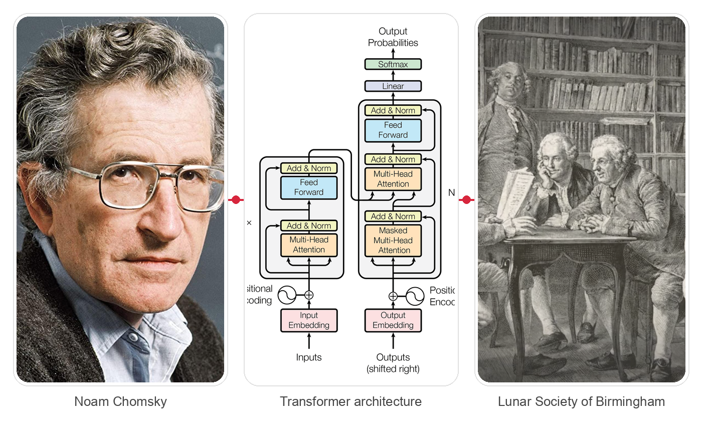
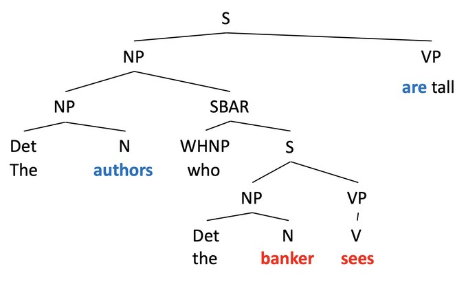
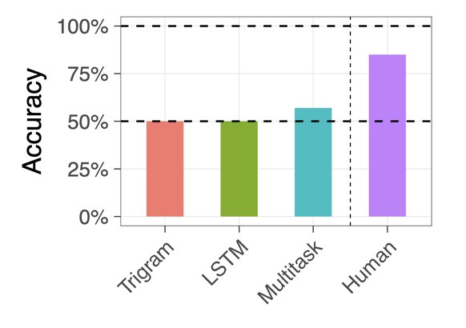
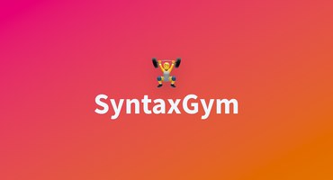
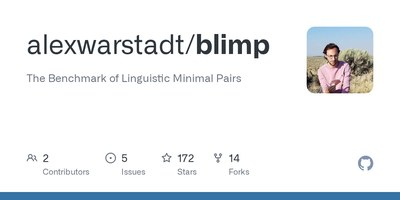
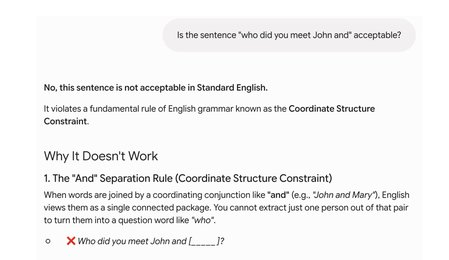
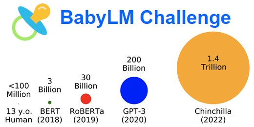
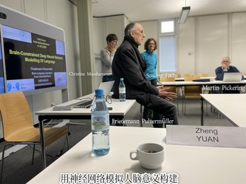

Modern Language Models Refute Chomsky’s Approach to Language
LLMs, linguistic theory, and the shifting burden of proof
ZHENG YUAN (Byron)
LPL, Aix-Marseille University (AMU)

2 · The provocation
Do LLMs refute Chomskyan linguistics?
Classical generative view
Modern LLM view
text
↓
next-token prediction
↓
trained transformer
Three questions we must keep separate:
Can a model perform linguistic behavior?
Can it learn it from plausible input?
Does it do so by a human-like neural & cognitive mechanism?
Piantadosi (2024)
3 · Two pictures of language
Two contrasting explanations of linguistic knowledge
A strong generative view
Predictive neural-network view
Grammar relies on specialized, structured principles
Grammar-like structure can emerge through learning
Syntax is relatively autonomous
Syntax and semantics are integrated
Key constraints may be innate
General learning biases + data may suffice
Explanation prioritizes explicit formal structure
Explanation begins with implemented predictive behavior
Simplified — neither tradition is monolithic. Piantadosi targets strong claims of necessity, not every version of generative linguistics.
Piantadosi (2024)
4 · What an LLM actually does
One objective: predict what comes next
The authors who the banker sees ___ tall.
Context → transformer representations → probability distribution
are0.91
is0.03
were0.02
To predict are (not is), the model tracks the long-distance dependency on authors — not the nearest noun banker.
Prediction is not the endpoint — it is the learning signal.
Syntactic structure (object relative clause)

Agreement accuracy across an object relative clause

(Marvin & Linzen, 2018)
5 · Beyond “just autocomplete”
The empirical claim: structure-sensitive behavior can emerge
Declarative
My walrus that will eat can giggle.
Question — move first (linear)
Will my walrus that ___ eat can giggle?
Question — move matrix
Can my walrus that will eat ___ giggle?
A learner cannot move the first auxiliary (will) linearly — it must select the matrix auxiliary (can). LLMs reach the structure-dependent result without an explicitly encoded transformational rule.
Anecdote ≠ evidence: use controlled minimal-pair tests, not a single ChatGPT output.
SyntaxGym — targeted syntactic evaluation

BLiMP — minimal-pair benchmarks

Piantadosi (2024); Gauthier et al. (2020); Warstadt & Bowman (2022); McCoy, Frank & Linzen (2018, 2020)
6 · Piantadosi’s strongest inference
What exactly is challenged?
If mechanism X is necessary for grammar, then a system without X should fail.
↓
LLMs lack explicit X yet achieve much grammar-like behavior.
↓
∴ X is not shown to be necessary.
LLMs do not prove Chomskyan mechanisms are false in the brain — but they undermine the claim that those exact mechanisms are logically or computationally necessary for acquiring and using grammar.
Piantadosi (2024)
7 · Why the debate is not over
Performance is not acquisition or mechanism
Behavioral adequacy
Does it produce human-like judgments & behavior? — plausible

ChatGPT
Developmental adequacy
Can it learn from child-realistic data & experience? — open

BabyLM Challenge
Mechanistic adequacy
Does it use representations & computations like the human brain? — unknown

F. Pulvermüller
Current models train on far more text than children receive, from written corpora — not speech, interaction, perception, or social context. This limits, but does not erase, the proof-of-possibility result.
Piantadosi (2024); Warstadt & Bowman (2022)
8 · Debate map & handoff
The real debate: what must a theory explain?
Competence
Can the system capture grammatical generalizations?
Learning
Can it acquire them from realistic experience?
Explanation
Must the theory be interpretable, symbolic, neurally grounded?
LLMs should not end linguistic theory — they should force it to become more explicit, comparative, and empirically testable.
Not refutation by default — a serious challenge that shifts the burden of proof.